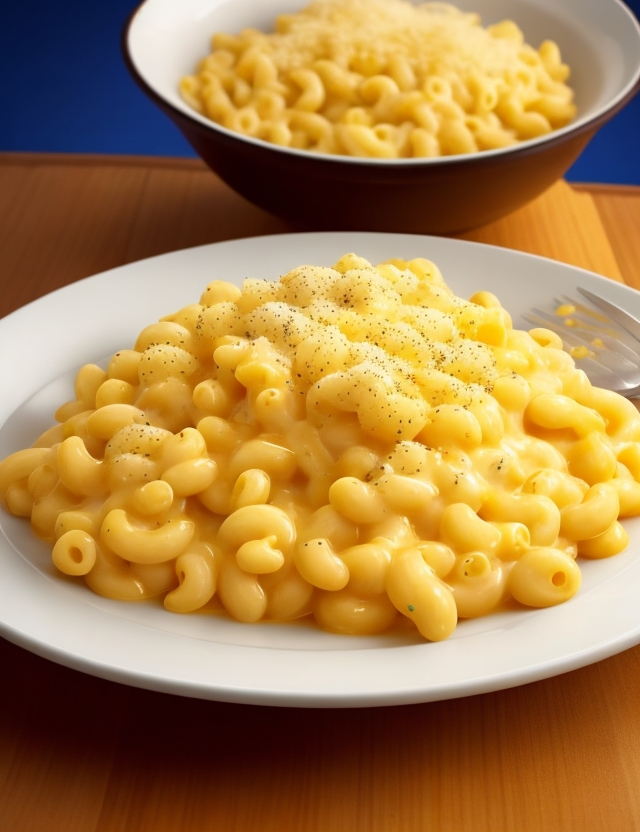

Slow Cooker Macaroni and Cheese

Description
An all in one macaroni cheese recipe that you can make easily in the slow cooker.
No need to make the sauce seperately just tip everything in and cook
Ingredients
- 350 g macaroni
- 600 ml whole milk
- 50g butter, in cubes
- 120 g cheddar, grated
- 50 g soft cheese
Steps
- Pour boiling water over the pasta then drain
- Add everything to the slow cooker and stir well
- Season, cover and cook on low for an hour
- Stir again and cook for another 30 minutes until the sauces has reduced and coats the macaroni
- Leave the lid off and cook for ten minutes. Either reduce more or add a splash of milk depending on the consistency
- Serve with extra grated cheese